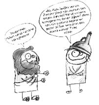

Sanatla tedavi…
Müzikle tedavi
Müzikle tedaviye ilk olarak eski Yunanda rastlanıyor. Fakat müziği ruhu arındırmak amacıyla kullananlar Razi, Farabi, İbni Sina gibi Doğulu bilginlerdir. Razi, melankoliklerin tedavisi üzerine yazdığı kitabında, “Melankolik hasta özellikle güzel sesle okunan şarkılar dinlemelidir.” der.
Orta Çağ’da Batıda akıl hastaları içlerine şeytan girdi diye ağır işkencelere maruz kalırken Osmanlı’da Darüşşifa’da ruhsal hastalıkların tedavisinde müzik terapi kullanılmıştır.
Yapılan bilimsel araştırmalarda, klasik Türk müziği ile klasik Batı müziğinin hastalıklar üzerinde iyileştirici bir etkiye sahip olduğu saptanmıştır.
Resimle tedavi
Ruh hastalarını tedavide kullanılan diğer bir yöntem resimdir. Otizm gibi birçok akıl hastalığının tedavisinde kullanılmış ve konuşamayan akıl hastalarını konuşturacak kadar etkili olmuş resimle tedavi yöntemi, alkol ve madde bağımlılığı olan hastaların tedavisinde de kullanılır.
Ayrıca çocukların yaptığı resimlerden ne hissettikleri anlaşılabilir. Böylece eğer ruhsal bir sorunu varsa daha kolay tedavi edilebilir. Örneğin, çocuğun çizdiği evdeki bacalardan yükselen kalın dumanlar aile için de yaşanılan kavgaları, çatışmaları, gösterir. İnsan resmi çoksa sosyal ilişkileri gelişmiş, azsa kopuk olabilir. Koyu renkli bulutlar çözülemeyen sorunları gösterir. Ellerin çok büyük çizilmesi dayağı, ayakların büyük çizimi ise kendine olan güveni, cinsel organların çizimi ise anne ve babayı çıplak görmüş olmayı ifade edebilir.
Hiperaktif çocuklar çok renkli ve karalama resimler çizerken, cinsel kimlik karmaşası olan çocuk, cinsel kimliğe zıt resimler çizecektir. Örneğin sakallı anne, çocuk emziren baba gibi...
Aile bireyleri arasına ağaç, yol, dere gibi şeylerin çizilmesi de aile içi iletişim kopukluğunu gösterir. Kardeşin çizilmemesi kardeş kıskançlığını, anne ve babanın büyük çizilmesi ise onlara duyulan hayranlığı veya onların çocuğa yaptığı baskıyı simgeleyebilir. Tabi ki bu sonuçlara çocuğun yaptığı bir iki resimden ulaşmak yanlış ve sakıncalı olur. Genel olarak resimler incelenmelidir.
“Resim yapmak düşünceyi, duyguyu boya ile dışa vurmaktır.” diye boşuna dememiş ünlü ressam Goya.
Tiyatro ile tedavi
Tiyatroyu psikolojik tedavide kullanmaya psikodrama denir. Günümüzde tiyatro modern psikoloji ve pedagojide kullanılmaktadır. Tiyatro, kişinin duygusal gerginliğinden kurtulmasına, iç çatışmalarına ve bireysel sorunlarına çözüm bulmasını sağlar. Çocuklara uygulandığında, onların birikmiş enerjilerini dışa atmalarını sağlar. Spastik çocukların tedavisinde de kullanılan tiyatro sayesinde yürümeye başlayan yahut da kızarak tepki verip konuşan spastik çocuklar olmuştur.
Psikodrama, tiyatral oyun yoluyla karşımızdakini anlamamızı sağlar. Örneğin annesinin sık sık kendisini uyarmasından şikâyet eden bir çocuk, psikodrama çalışmasında anne rolünü oynarken, annelik görevinin ne kadar zor olduğunu anlayabilir.
Psikodrama, bir şeyi yapıp sonucunu görme olanağı sağlar veya öyle değil de böyle yapsaydım, onu değil bunu deseydim, onu değil bunu seçseydim acaba ne olurdu gibi birçok sorunun cevabını yaşayarak, yaparak vermeyi sağlar.
Hayal kırıklıklarımızı, pişmanlıklarımızı tekrar yaşayarak bunları aşmamızı, hatalarımızı görmemizi kolaylaştırır. Veya başkalarının bizi, yaşadığımız olayları oynaması sonucu kendimize bakıp ayna tutmamızı sağlar. Örneğin kelebek etkisi filminde olduğu gibi şöyle yapsaydım nasıl olurdu sorusunun cevabını en azından oyun yoluyla verip suçluluk duygularımızı azaltır.
Niye psikoloğa gitmeyiz?
Peki, madem ruhi hastalıkların da tedavisi mümkün, niye psikoloğa gitmeyiz?
• Psikoloğa gitmeyiz çünkü Türk Ceza Kanununun 46. maddesinden yola çıkılarak bize 46 denmesi hoşumuza gitmez…
• Psikoloğa gitmeyiz çünkü psikoloğa gidince bizi konuşturup aile sırlarımızı öğrenir, büyücüye, falcıya gitmek daha akıl kârıdır…
• Psikoloğa gitmeyiz çünkü damgalanmaktan korkarız, delirmek daha mantıklıdır...
• Psikoloğa gitmeyiz çünkü derdimizi anlatacak nineler, dedeler, muhtarlar, Güzin Ablalar çevremizde oldukça çoktur, onlar bizim derdimize derman olurlar, üstelik saat tutup üste para falan da almazlar...
• Psikoloğa gitmeyiz çünkü gittiğimiz psikolog bizden daha deli çıkabilir…
BİTMEZ...
Çeşit çeşit psikoloji…
Adalet psikolojisi: Suçlunun, tanığın ve sanığın psikolojik yapısını inceler.
Bilişsel psikoloji: Düşünme, algılama, hatırlama gibi bilişsel süreçlerle ilgili deneyler yapar.
Danışmanlık psikolojisi: Kişiye yaşamını kolaylaştıracak bilgiler verir, yetenekleri doğrultusunda yol gösterir.
Deneysel psikoloji: Davranışlar üzerinde bilimsel araştırmalar yapar.
Eğitim ve okul psikolojisi: Öğrenme koşullarının düzenlenmesi, öğrencilerin sorunları ve meslek seçimleriyle ilgilenir.
Endüstri psikolojisi: Belirli bir işe en uygun kişiyi, belirli bir kişiye de en uygun işi seçer.
Evrim psikolojisi: Toplumsal davranışın evrimsel kökenlerini inceler.
Fizyolojik psikoloji: Biyolojik yapı ve davranışlar arasındaki ilişkiyi inceler.
Gelişim psikolojisi: Kişinin yaşa bağlı olarak gösterdiği değişiklikleri inceler.
Genetik psikoloji: Kalıtımsal özelliklerin davranışlara etkisini inceler.
Kişilik psikolojisi: Kişiliğin ortaya çıkış nedenlerini ve oluşumunu inceler.
Klinik psikoloji: Ruh hastalıklarının teşhis ve tedavisiyle ilgilenir.
Öğrenme psikolojisi: Öğrenme, öğrenme türleri, öğrenmeyi etkileyen etmenler üzerinde araştırmalar yapar.
Parapsikoloji: Doğaüstü olay ve olguları, duyuüstü konuları inceler.
Psikometri: Psikologların uygulamalarında kullanacakları ölçümleri belirler.
Sosyal psikoloji: İnsan-toplum etkileşimini inceler.
Esprisi bile var…
• Algıda seçiciysem günahım ne?
• Düşünüyorum da ürküyorum düşüncelerimden.
• Freud da sollardı.
• Ten ölür, ruh kalır; yiğit ölür, miras kalır.
• Sert iklimin mert çocuğu Fahrettin Kerim
Bir yanlışınızı görürsem fena ederim...
• Biz üç kişiydik: Mazhar Osman Uzman
• Her ananın oğlu asker olabilir ama her psikoloğun annesi deli olamaz.
• Akıllı olup dünyanın kahrını çekeceğine, deli ol dünya senin kahrını çeksin.
